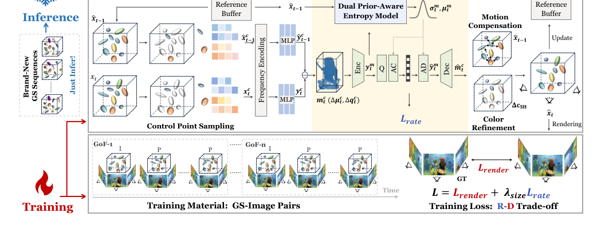
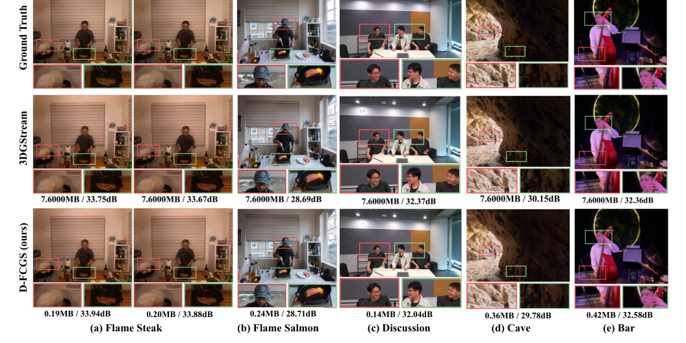
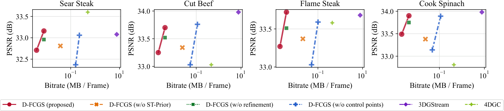

D-FCGS
简单摘要
这篇工作要解决的问题是：自由视点视频 (FVV) 可实现身临其境的 3D 体验，但动态 3D 表示的高效压缩仍然是一个重大挑战。
对应的核心做法是：现有的动态 3D 高斯分布方法将重建与优化相关的压缩和定制运动格式结合起来，限制了泛化和标准化。
从机制上看，关键设计在于：(1) 采用 I-P 编码的标准化帧组 (GoF) 结构，利用稀疏控制点提取帧间运动张量；。
训练或推理层面的重点是：（2）双先验熵模型，融合超先验和时空先验，以实现准确的速率估计；。
实验层面的主要信号是：（3）控制点引导的运动补偿机制和细化网络，以增强视图一致的保真度。


简而言之，这篇论文关注的核心是：这篇工作要解决的问题是：自由视点视频 (FVV) 可实现身临其境的 3D 体验，但动态 3D 表示的高效压缩仍然是一个重大挑战。 对应的核心做法是：现有的动态 3D 高斯分布方法将重建与优化相关的压缩和定制运动格式结合起来，限制了泛化和标准化。 从机制上看，关键设计在于：(1) 采用 I-P 编码…
这篇工作要解决的问题是：我们的世界本质上是动态的，3D 场景随着时间的推移而演变，并且可以从任意角度观察。
对应的核心做法是：捕捉和表示这种 4D 动态长期以来一直是计算机视觉和图形领域的一项基本挑战。
从机制上看，关键设计在于：自由视点视频 (FVV) 可实现沉浸式 6 自由度体验，已成为虚拟现实、远程呈现和远程教育领域应用的一种有前景的解决方案。
训练或推理层面的重点是：然而，实现实用的 FVV 系统需要高效的重建、压缩、传输和渲染解决方案。
实验层面的主要信号是：在这项工作中，我们重点关注动态 3D 场景压缩的关键问题。
核心创新
综合引言与方法部分，这篇论文的核心创新可以概括为以下几方面：
1）问题定义与研究动机
这篇工作要解决的问题是：我们的世界本质上是动态的，3D 场景随着时间的推移而演变，并且可以从任意角度观察。
对应的核心做法是：捕捉和表示这种 4D 动态长期以来一直是计算机视觉和图形领域的一项基本挑战。
从机制上看，关键设计在于：自由视点视频 (FVV) 可实现沉浸式 6 自由度体验，已成为虚拟现实、远程呈现和远程教育领域应用的一种有前景的解决方案。
训练或推理层面的重点是：然而，实现实用的 FVV 系统需要高效的重建、压缩、传输和渲染解决方案。
实验层面的主要信号是：在这项工作中，我们重点关注动态 3D 场景压缩的关键问题。
2）方法框架与核心模块
这篇工作要解决的问题是：(1) 稀疏运动提取 (sec:motion_extraction)，(2) 前馈运动压缩 (sec:motion_compression) 和 (3) 运动补偿和细化 (sec:frame_recon)。
对应的核心做法是：训练和推理过程将在 sec:training 中提到。
从机制上看，关键设计在于：给定两个相邻的高斯帧 和 ，我们首先从密集高斯帧中采样稀疏控制点并提取运动特征。
训练或推理层面的重点是：这些运动张量使用我们的双先验熵模型进行压缩，以实现有效的速率估计。
实验层面的主要信号是：在解码过程中，我们通过控制点引导的运动补偿和颜色细化进行重建，同时将其存储到缓冲区中以供将来参考。
3）实验设计与工程价值
这篇工作要解决的问题是：我们通过解决三个关键研究问题来严格评估我们的 D-FCGS 模型。
对应的核心做法是：逐项概括和有效性。
从机制上看，关键设计在于：与基于优化的方法相比，D-FCGS 能否泛化广泛使用的数据集中的新场景，同时实现有竞争力的率失真性能？。
训练或推理层面的重点是：D-FCGS在多样化、高动态场景下表现如何，系统在不同超参数下是否稳定？。
实验层面的主要信号是：控制点）做出有意义的贡献？。
技术细节
下面按照论文的方法章节结构展开，重点说明模型的关键模块、公式设计和训练策略。
这篇工作要解决的问题是：(1) 稀疏运动提取 (sec:motion_extraction)，(2) 前馈运动压缩 (sec:motion_compression) 和 (3) 运动补偿和细化 (sec:frame_recon)。
对应的核心做法是：训练和推理过程将在 sec:training 中提到。
从机制上看，关键设计在于：给定两个相邻的高斯帧 和 ，我们首先从密集高斯帧中采样稀疏控制点并提取运动特征。
训练或推理层面的重点是：这些运动张量使用我们的双先验熵模型进行压缩，以实现有效的速率估计。
实验层面的主要信号是：在解码过程中，我们通过控制点引导的运动补偿和颜色细化进行重建，同时将其存储到缓冲区中以供将来参考。
$$ G(\boldsymbol{x}) = e^{-\frac{1}{2}(\boldsymbol{x} - \boldsymbol{\mu})^T \boldsymbol{\Sigma}^{-1} (\boldsymbol{x} - \boldsymbol{\mu})}, $$
这条公式用于定义模型中的核心计算关系：左侧给出目标量，右侧由输入与参数共同决定。阅读时可先关注 G、x、e、T 的物理/几何含义，再看它们如何影响训练目标或渲染结果。
$$ C = \sum_i c_i \alpha_i \prod_{j=1}^{i-1} (1-\alpha_j), $$
这条公式用于定义模型中的核心计算关系：左侧给出目标量，右侧由输入与参数共同决定。阅读时可先关注 C、c_i、j、i 的物理/几何含义，再看它们如何影响训练目标或渲染结果。
$$ L_{\text{render}} = \lambda L_{\text{D-SSIM}} + (1-\lambda) L_1. $$
这条公式用于定义模型中的核心计算关系：左侧给出目标量，右侧由输入与参数共同决定。阅读时可先关注 D、L_1 的物理/几何含义，再看它们如何影响训练目标或渲染结果。
$$ \boldsymbol{\mu^c} = FPS(\{\mu_i\}_{i\in N}, \frac{N}{M}), $$
这条公式用于定义模型中的核心计算关系：左侧给出目标量，右侧由输入与参数共同决定。阅读时可先关注 c、i、N、M 的物理/几何含义，再看它们如何影响训练目标或渲染结果。
$$ \boldsymbol{x^{c}} = Index(\boldsymbol{x}, \boldsymbol{\mu^c}), $$
这条公式用于定义模型中的核心计算关系：左侧给出目标量，右侧由输入与参数共同决定。阅读时可先关注 x、c 的物理/几何含义，再看它们如何影响训练目标或渲染结果。
$$ \boldsymbol{y^c_{t}} = MLP(FreqEnc\{\boldsymbol{x^c_t}\}), $$
这条公式用于定义模型中的核心计算关系：左侧给出目标量，右侧由输入与参数共同决定。阅读时可先关注 y、t、x、c_t 的物理/几何含义，再看它们如何影响训练目标或渲染结果。



把全文方法串起来看，这篇论文的逻辑基本都遵循同一条主线：先把输入组织成更容易处理的表示，再通过模型结构和损失函数把这个表示推向目标输出，最后用可视化与数值实验共同证明该设计有效。
实验结论
实验部分主要回答两个问题：第一，方法是否真的优于已有基线；第二，这种优势来自哪一个设计决策。
这篇工作要解决的问题是：我们通过解决三个关键研究问题来严格评估我们的 D-FCGS 模型。
对应的核心做法是：逐项概括和有效性。
从机制上看，关键设计在于：与基于优化的方法相比，D-FCGS 能否泛化广泛使用的数据集中的新场景，同时实现有竞争力的率失真性能？。
训练或推理层面的重点是：D-FCGS在多样化、高动态场景下表现如何，系统在不同超参数下是否稳定？。
实验层面的主要信号是：控制点）做出有意义的贡献？。
- 方法在核心指标上的优势与结构设计和训练目标直接相关；
- 消融实验表明，拿掉关键模块后性能与结果质量都有明显回落；
- 论文不仅比较数值，也关注可视化质量、稳定性和泛化能力等更贴近真实使用的信号。
理解评价
这篇工作要解决的问题是：在本文中，我们提出了动态高斯分布的前馈压缩（D-FCGS），这是一种用于零样本动态高斯序列压缩的新颖前馈框架。
对应的核心做法是：首先，我们采用标准 GS 压缩的 I-P 编码配置文件，并通过控制点引入稀疏帧间运动提取。
从机制上看，关键设计在于：其次，我们提出了一种具有双先验熵模型的端到端运动压缩框架，充分利用超先验和时空上下文来改进速率估计。
训练或推理层面的重点是：第三，控制点引导的运动补偿与颜色细化网络相结合，以保证高保真度和视图一致的重建。
实验层面的主要信号是：实验结果表明，D-FCGS 在两个基准数据集（MeetRoom 和 N3V）上实现了卓越的压缩效率（超过 17 倍压缩），并且在来自广泛数据集的不同场景中实现了卓越的鲁棒性，显着增强了传输和……。
如果把它当成研究参考，建议重点关注三件事：第一，这套方法真正依赖的归纳偏置是什么；第二，实验中真正拉开差距的模块是哪一个；第三，它的局限究竟来自数据、算力还是监督信号本身。
以下相关论文可以作为进一步追踪的入口：